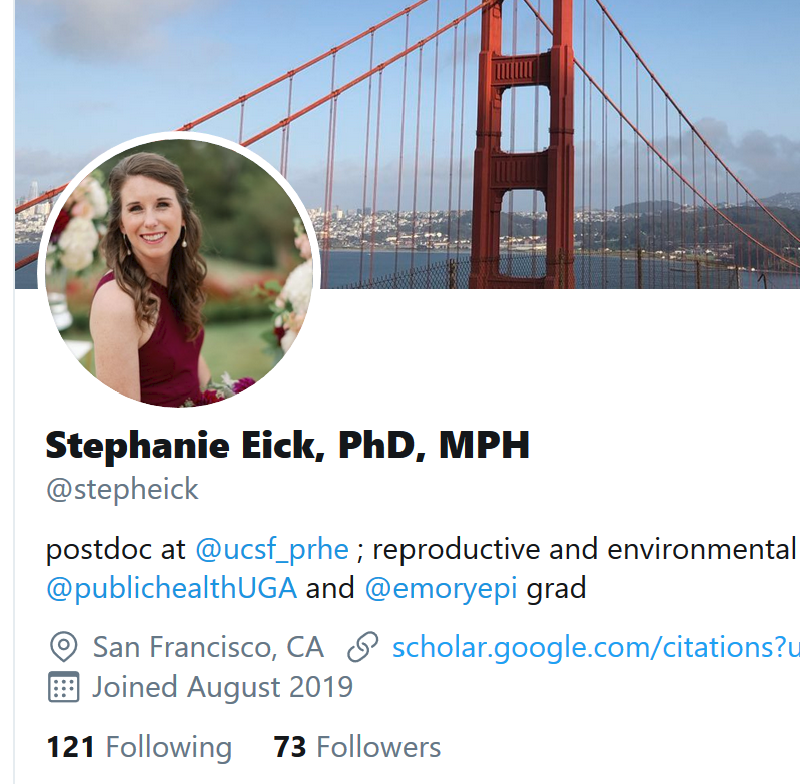

Motivation
- You will likely have many jobs throughout your career.
- Freelance/self-employed jobs keep growing.
- Most good jobs (and other opportunities) are found through connections.
- Think of yourself as a “brand”.





If I want to get a quick idea who someone “is” in academia, I check their Google Scholar page.
I haven’t found those sites useful. I therefore deleted my accounts on those sites since I want to control my web presence myself and don’t want to keep too many sites up-to-date.